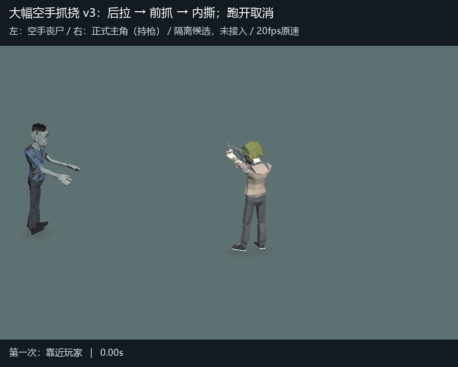
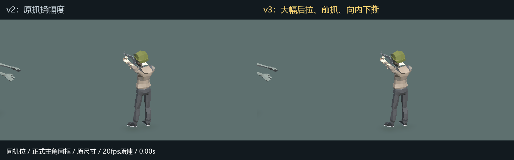
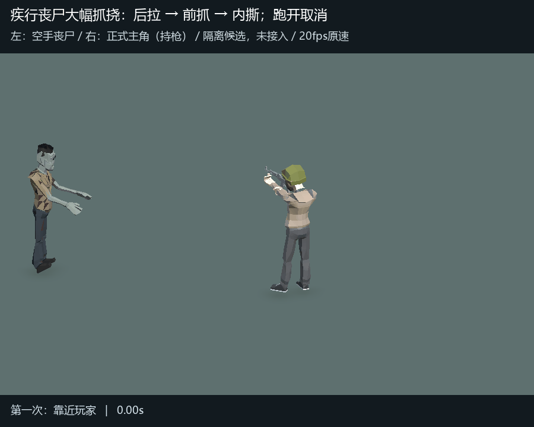
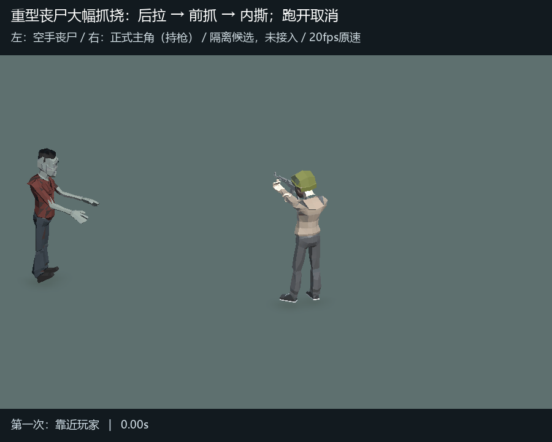

幅度已确认，距离请看v4：本页仍为旧1.5米摆位，请查看贴身接触版。
丧尸抓挠 v3：明显后拉，再向前抓、向内下撕
本版只扩大空手抓挠：后拉张臂约0.3秒，随后快速前抓，在进入范围后的0.4秒处达到接触姿态，再向内下方撕扯并收手。中途跑开则取消。角色大小、镜头和现有伤害规则均保持。
新版完整动作
左侧是空手丧尸，右侧持枪者是正式主角。先演示持续贴近，再演示准备时跑开取消。

同机位原速对照：v2 / v3

另外两类丧尸的同幅度动作


正式模型克隆的临时动作候选，尚未正式接入。每段4秒、20fps，骨长和模型缩放保持。此版不表示采用或更改撕咬草案，也不是实战录像。